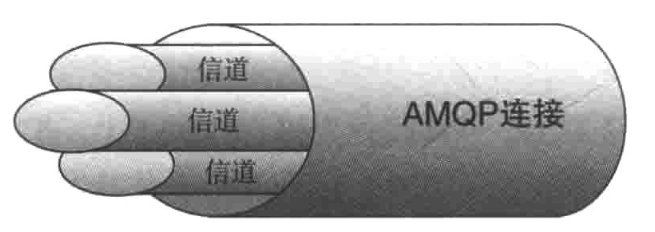
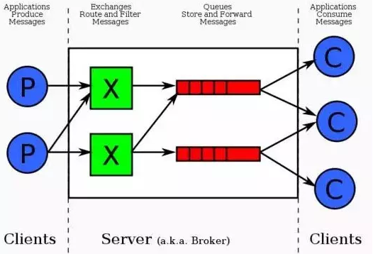

rabbitmq 使用中的一些记录
Table of Contents
1 rabbitmq特性
消息队列中间件有两种传递模式：点对点 和 发布/订阅
点对点依靠队列的原理；发布/订阅则可以用于一对多的广播
消息中间件的作用：解耦、冗余(存储)、扩展性、削峰、可恢复性、顺序保证、缓冲、异步通信
RabbitMQ的具体特点：可靠性，持久化、传输确认、发布确认、灵活的路由，多个交换器可以绑定 队列镜像,管理界面,插件机制,异常跟踪机制
生产者消费者与rabbit建立tcp连接，为了减少系统创建tcp连接的资源消耗，一条tcp连接上创建 多条信道(无限制信道条数).

AMQP消息路由必须有三部分: exchange、queue、binding
AMQP的basic.get从队列获取单条消息而不是持续订阅，basic.consume实现持续订阅，高速吞吐。
多个消费者订阅到同一队列上时，每条消息只会发送给一个订阅的消费者，消费者每条消息都必须进行 确认(autoack=true情况下，rabbit自动视为确认了消息)

rabbitmq工作步骤 ：
- 先获取一个 Connection（连接）
- 从 Connection（连接）上获取一个 Channel（信道）
- 声明一个 Exchange（交换器），只会创建一次。
- 声明两个 Queue，只会创建一次。
- 把 Queue 绑定到 Exchange（交换器）上.
- 向指定的 Exchange（交换器）发送一条消息.
import pika
connection = pika.BlockingConnection(pika.ConnectionParameters('localhost'))
channel = connection.channel()
channel.exchange_declare(exchange='first', type='topic') #durable，是否持久化 autoDelete，是否自动删除
channel.queue_declare(queue='A')
channel.queue_declare(queue='B')
channel.queue_bind(exchange='first', queue='A', routing_key='a.*.*')
channel.queue_bind(exchange='first', queue='B', routing_key='a.#')
channel.basic_publish(exchange='first',
routing_key='a.b',
body='Hello World!')
channel.basic_publish(exchange='first',
routing_key='a.b.c',
body='Hello World!')
Queue
rabbitmq中，队列消息可以设置为持久化，或者自动删除。
- durable=True 设置为持久化的队列，queue中的消息会在server本地硬盘存储一份，防止系统crash，数据丢失
- autoDelete=True 设置为自动删除的队列，当不存在用户连接到server，队列中的数据会被自动删除
2 名词解释
| 专有名词 | 名词解释 | 详情 |
|---|---|---|
| PubSub | 发布订阅模式 | |
| MQ(messages queuing) | 消息队列 | |
| AMQP(advanced message queuing protocol) | 高级消息队列协议 | |
| exchange | 交换器 | 用来接收生产者传递过来的消息，然后将这些消息路由至服务器中的队列 |
| exchange type 三种常见类型 | ||
| direct | 完全匹配 | 单播: 消息路由到那些 Routing Key 与 Binding Key 完全匹配的 Queue 中 |
| topic | 模糊匹配 | 主题: Exchange 会把消息发送到一个或者多个满足通配符规则的 routing-key 的 Queue |
| fanout | 忽略匹配 | 广播: 把所有发送到该 Exchange 的消息路由到所有与它绑定 的Queue 中 |
| Routing key | 路由键 | 消息发送给 Exchange（交换器）时，消息将拥有一个路由键（默认为空）,相当于路由 |
| Binding key | 绑定键 | 用于消息队列与交换器之间的沟通。也是消息路由的规则，相当于一个路由表 |
| Queue | 消息队列 | 用来保存消息直到发送给消费者。一个消息可以进入一个或多个队列，除消费者取走消息，否则它一直在消息队列里 |
| Connection | 网络连接 | 一个tcp连接 |
| Channel | 信道 | 多路复用连接中一个独立的双向数据传输通道。无论是发布消息、订阅队列、接收消息都是通过信道来完成 |
| Virtual Host / message broker | 虚拟主机 | 交换器、消息队列相关的对象,一个VHOST其实可以看成一个mini rabbitmp server, Rabbitmq默认vhost是/ |
3 rabbit tools
- rabbitmqctl
- rabbitmq-plugins